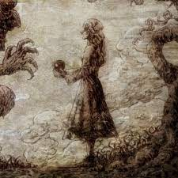

ИсторияТоп самых популярных персонажейИстория создания образа титановМангаПервый титанВооружённый силыРост титанов |
Имир ФрицИмир Фриц (ユミル・フリッツ Yumiru Furittsu?) — являлась первым человеком, получившим силу титанов.[4][5] Она была наложницей короля Элдии, который злоупотреблял своей властью, опустошая остальной мир. Через тринадцать лет после пробуждения своей силы девушка умерла, защищая короля. Фриц приказал своим дочерям — Марии, Розе и Сине — съесть труп их матери. Таким образом её силы разделились на то, что в конечном итоге стало известно как Девять Титанов.  История Около 2000 лет назад на деревню Имир напали элдийцы, разграбили дома и поработили всех жителей, которым потом отрезали языки. Среди них оказалась и Имир. Однажды, после того, как кто-то из рабов выпустил свинью, правитель племени, Фриц, собрал их всех и спросил, кто это сделал. Он сказал, что если виновник не будет найден, то всем рабам выколят по одному глазу. Тогда они указали на Имир. Она предстала перед королём, и он сказал ей, что теперь она свободна. Её действительно отпустили, но лишь затем, чтобы поохотиться за ней ради развлечения. Раненая и отчаявшаяся, Имир, убегая от погони по лесу, увидела необычайно большое дерево с дуплом у основания. В поисках убежища, она вошла внутрь и, не зная о провале в земле, упала в подземный резервуар с жидкостью. Имир начала тонуть, и паразит, который похож на человеческий позвоночник, прикрепился к её спине, превратив её в первого титана. С новообретенной силой, Имир вернулась, чтобы служить Фрицу. С помощью силы титана она поднимала целину, строила мосты и всячески обогащала элдийский народ. Также, по приказу короля, она разгромила армии врагов Элдии, марлийцев. Чтобы «вознаградить» Имир за ее службу, Фриц сделал её своей наложницей, и она родила ему троих детей: Марию, Розу и Сину. Через тринадцать лет после обретения силы титанов, Имир умерла во время покушения на короля. Она заслонила Фрица собой от копья, которое в него кинул один из пленных солдат. Однако после смерти она вдруг очутилась в странном, бесплодном месте, полностью покрытом песком. Осознав, что Имир действительно погибла, Фриц заставил своих дочерей съесть труп их матери, чтобы сохранить силу титанов. Уже на смертном одре, он приказал им непрерывно производить потомство, чтобы после того, как они умрут, дети съели их позвоночник, а их дети их позвоночник, и так далее, передавая этот ритуал от ребёнка к ребёнку. Таким образом, кровь Имир никогда не исчезнет, и Элдия сможет вечно править миром с помощью своих титанов. Сила самой же Имир разделилась на девять разумных титанов, которые передавались между её наследниками путём каннибализма. Даже после смерти, Имир продолжает служить своим потомкам. Каждый раз, когда человек, по своей воле или насильно, превращается в титана, она строит тело этого титана из песка, которым покрыт её мир — Неизведанные Земли, место, где все пути сходятся в одну точку. Из этого же песка она строит новые части тела людям-перевёртышам, позволяя им регенерировать. Когда обладатель Координаты использует свою силу, он тоже попадает к Имир в Неизведанные Земли, где говорит ей свой приказ. Однако Имир подчиняется лишь тем, в чьих жилах течёт королевская кровь, поэтому полностью использовать силу Прародителя может лишь прямой потомок Фрица.Интересные факты Имя Имир в германо-скандинавской мифологии — первое живое существо, инеистый великан, из которого был создан мир. Также Имир может означать «крик». В спец-эпизодах рассказывается судьба Ильзы Лангнер — солдата из Разведкорпусa, которая вела дневник. В нём говорится о титане, который считал некую Имир своей госпожой и устроил по этому поводу разновидность алтаря. <на главную |